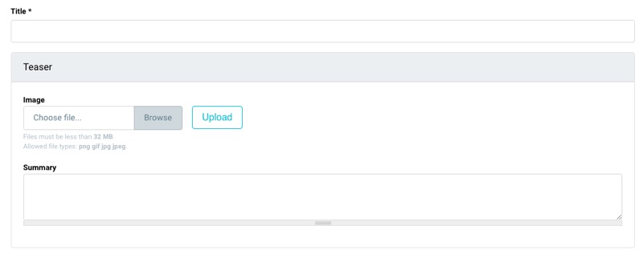
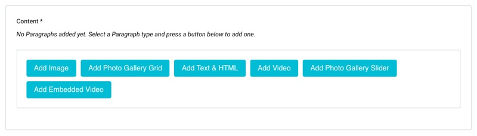
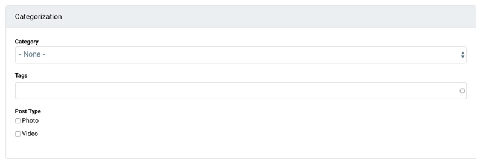
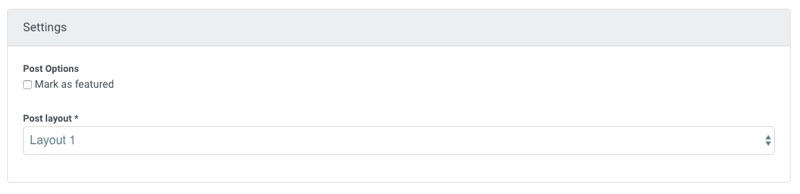

Creating Article
Friday, March 31, 2017 6:13 AMTo create article go to: Content > Add Content > TheMAG Article.
This content type is divided into four sections:
- Teaser
- Content
- Categorization
- Settings
Teaser Section:
The Teaser section contains teaser image and summary field. The content of those fields is automatically displayed in the article teaser which is generated by the views module.

Content Section:
This section is representing the main content of the article. In order to give more editing power, we use the Paragraph module. Instead of putting all the content in one WYSIWYG body field including images and videos, you can choose between predefined paragraph types independent from one another. Currently there are six predefined paragraph types: Image, Video, Embed Video, Gallery Grid, Gallery Slider and Text & HTML.

You can edit existing paragraph types or defined new bundles in the Structure > Paragraph Bundles.
For more about Paragraphs, see module page: https://www.drupal.org/project/paragraphs
Categorization:
In this section you can add various meta-information to each post you create. Categories, tags, and post type (post icon). Categories are predefined taxonomies which are used to sort content into different sections. TheMAG comes without predefined categories. So, if you start using TheMAG without demo content, you will need to create some categories before you start creating content.

To create category (term), go to: Structure > Taxonomy > Categories and then click on Add term.
Settings Section:
In this section you can use Post options to include or exclude teaser image from the main content, or to mark post as featured. Also you can use Post layout drop-down menu and choose post layout style for each post you create.
